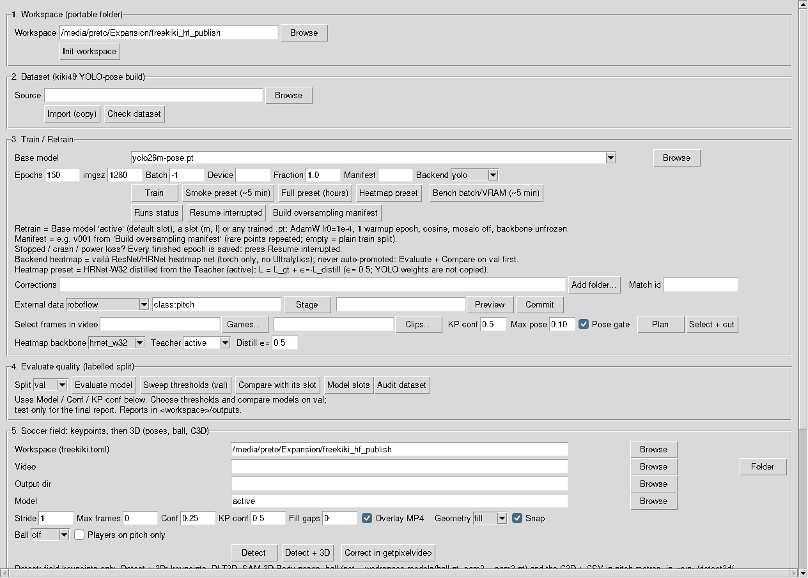
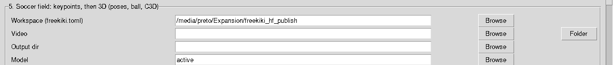
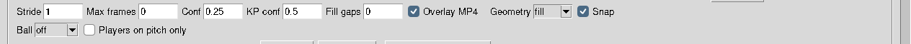
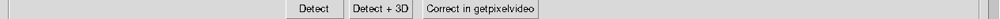

vaila/freekiki.pySoccer Tools → FreeKiki (49 field KPs) (Frame B)uv run vaila/freekiki.py {init,import-dataset,ingest,check,manifest,train,status,resume,bench,evaluate,sweep,compare,models,sizes,grow,audit,detect} -w WORKSPACEgetpixelvideo.py --freekiki-run DIR). The predicted
labels appear, in edit mode.images/, labels/,
data.yaml and session.json into the folder you choose. Only complete frames
are saved.active = fine-tune).
ingest checks, and then training
starts.train -w WS --base active --add-dataset FOLDER [--match-id M], without
--manifest.queue --need, one montage)uv run --no-sync vaila/freekiki.py detect -w WS --video ~/data/yt_mining/vaila_batch_<ts> --model l --stride 5 --no-overlay --output-dir ~/data/yt_mining/detect uv run --no-sync vaila/freekiki.py queue -w WS --batch ~/data/yt_mining/detect/processed_freekiki_batch_<ts> --need p5,p29,p39,p47 --montage uv run --no-sync vaila/freekiki.py ingest -w WS --src WS/incoming/montage_<ts> [--commit]
For each frame the field camera (fitted to the accepted points) says whether a needed keypoint is in the picture, even when the network misses it. Priority:
--half-seen: no camera, but half-seen (off by default: such frames were all discarded in review);At most 5 frames per video (--per-video), --min-gap apart: many videos, few frames
each.
--montage writes WS/incoming/montage_<ts>/:
montage.mp4: H.264 with every frame a key frame; other sizes are letterboxed;session.json: the drafted predictions;montage_frames.csv: source video, frame, time, scale/offset, reason and match.match defaults to the source video name; cuts of one video share it. Edit it to merge the clips of
one match. ingest without --match-id uses it per frame, so the leakage checks work per
match.
uv run --no-sync vaila/freekiki.py detect -w WS --video /path/new_videos uv run --no-sync vaila/freekiki.py queue -w WS --batch /path/new_videos/processed_freekiki_batch_<ts> uv run --no-sync vaila/getpixelvideo.py --freekiki --freekiki-workspace WS --freekiki-session WS/incoming/SESSION_ID/session.json uv run --no-sync vaila/freekiki.py ingest -w WS --src WS/incoming/SESSION_ID --match-id MATCH_ID uv run --no-sync vaila/freekiki.py ingest -w WS --src WS/incoming/SESSION_ID --match-id MATCH_ID --commit uv run --no-sync vaila/freekiki.py ingest -w WS --src WS/incoming/SESSION_ID --match-id HARD_MATCH --split hard --commit uv run --no-sync vaila/freekiki.py check -w WS uv run --no-sync vaila/freekiki.py evaluate -w WS --split hard --model runs/RUN/weights/best.pt
Label every visible point, or hide it. An empty point is written as 0 0 0
("not visible"), and the pose loss then teaches the network that the point is absent. A frame with
only a few labelled points therefore makes the missed points worse.
FreeKiki checks every frame. The labelled pitch points give a field homography, and every point whose projection falls inside the image must be labelled or hidden with Del (occluded or not there). Frames that fail the check:
incomplete_frames.csv.ingest rejects them.The check needs at least 4 spread pitch points.
Ghosts in the review window:
missing: ... turns green (complete) when the frame can be
exported.Queue. queue picks up to 25 frames per clip, at least 5 frames apart, in this
order:
PageDown/PageUp walks exactly the queue. queue.csv says why each frame was chosen.
Train or hard. --split hard is a labelled holdout of difficult footage. It is
never trained on; report it with evaluate --split hard and choose on val. A match lives in one
split only:
Before ingesting.
hard: images/hard to the workspace
data.yaml.human_vs_ai.csv describes training annotations, not independent evaluation.FreeKiki teaches a YOLO-pose network to find the 49 soccer-field keypoints of the kiki
template (vaila/models/soccerfield_kiki.csv, skeleton vaila/skeletons/soccerfield_kiki49.json)
in broadcast video — line intersections, penalty-arc intersections, goal posts and nets, corner flags and the
centre — and then finds them in your videos. These points are what a later step needs to calibrate the camera
frame by frame; FreeKiki already checks, per frame, whether the accepted points give a geometrically
valid field homography (RANSAC, inliers, reprojection error, orientation). Compared with Field KPs (AI)
(32-point FIFA/Roboflow schema), FreeKiki uses the richer 49-point schema with 3D-aware points (posts and flags,
z ≠ 0).
| Step | GUI button | What happens | Time |
|---|---|---|---|
| 1 | Init workspace | creates the workspace folder layout | seconds |
| 2 | Import (copy) → Check dataset | copies the kiki49 dataset in and validates it | ~10 min (11 GB) |
| 3 | Smoke preset → Train | tiny training to prove everything works | ~5 min |
| 4 | Full preset → Train | the real training | many hours |
| 5 | Evaluate model and Detect | measure quality, then run on your videos | minutes |
Training stopped (Stop button, crash, power loss)? Nothing finished is lost: press Resume interrupted — see If the training stops.
Every GUI action prints the equivalent >> command in the terminal, so any step can be
repeated from the command line. The full mapping is in GUI button ↔ CLI command.
For detection with an existing model, use section 5 alone: select the FreeKiki
Workspace folder containing freekiki.toml and
a promoted model (models/freekiki_<slot>.pt; Model active = the default slot), select the video or folder, then press Detect.
Sections 1 and 5 show the same Workspace field. Selecting a model file does not replace
the workspace because detection reads its settings. Browsing to a .pt inside a
workspace fills the Workspace field automatically. Init workspace, dataset import, and
training are needed only when creating a new workspace/model.
Section 5 has a button, Ball track in getpixelvideo: it writes ball_for_correction.csv
in the newest 3D folder (the raw ball pixels, one row per frame) and opens getpixelvideo on the video with that
track (--track-csv). After a folder / batch Detect + 3D it asks which video to open.
Correct the ball there and Save; <video>_markers.csv appears next to the video.
Then use Rebuild ball (after correction) (or
freekiki.py ball-rebuild --out <3d folder> --ball-csv <markers.csv> --video <video>).
A corrected point is accepted as it is (score 1.0) and the physical smoothing still applies.
Section 5 runs the field keypoints and, optionally, the 3D chain. Open Frame B → Soccer Tools → FreeKiki, then scroll down to section 5. The window below shows where it sits (sections 1 to 5):


active is the default slot. Use another name only to compare models.
fill by default): how the field camera fills or fixes keypoints (table
below). It applies to the Detect button only. Detect + 3D does not read this box; it uses the
workspace setting (fill by default).sam3 by default, or net / off):
sam3: default. Needs vaila/models/sam3/sam3.pt (found the ball on all
421 frames of the test clip).net: the dedicated ball detector. It needs <workspace>/models/ball.pt,
which is not trained yet; the GUI refuses to run without it.off: no ball, only the field keypoints and the people.| Geometry | What it does | When to use it |
|---|---|---|
fill | Fills missing keypoints from the fitted camera. Accepted points stay as they are. | Default. |
fix | Fills, and also replaces accepted points that disagree with the camera. | When the overlay shows points off the lines. |
off | Raw network output, no camera. | Only to compare with the network alone. |

<video>_kiki49.csv (see Keypoints by hand).The log box prints each action as a terminal command (>>). For Detect + 3D the line
contains detect-soccer-3d and the flags you chose, so you can rerun the same thing from the
terminal. Detect + 3D writes one folder per video, <output dir>/<video>_3d_<time>/,
with everything you need at its top level:
| File | Content |
|---|---|
<video>_3d_overlay.mp4 | the full video: field keypoints (green lines and dots), the kept people's skeletons with their ID, and the ball with its score (green = score ≥ 0.5, yellow below) |
field_kps_3d.csv | the 49 field points per frame, in metres on the pitch, with the reprojection error |
poses_3d_on_field.csv | the keypoints of each kept person, in metres on the pitch |
players_on_field.csv | the pitch-gate verdict of every tracked person |
ball.csv | the ball in pixels from SAM 3 or the ball detector, one row per frame, with score |
ball_3d_on_field.csv | the ball on the ground plane, inside the pitch |
field_ball_c3d.csv, ball_c3d.csv, person_<id>_c3d.csv | the same markers as the C3D files, one row per frame (frame, time_s, then label_X, _Y, _Z in metres; a missing sample is an empty cell) |
ground_tracks.csv | each kept person's ground point: the raw bottom centre of the box, and the smoothed track the poses are anchored on |
<video>_topview.mp4 | top view animation: the field in metres, each person's path (coloured, with its ID) and the ball's path (yellow); <video>_topview.png is the last frame |
field_ball.c3d | the 49 field points and the ball, for a C3D viewer (metres, rate = video fps) |
ball.c3d | the ball alone, same rate; a frame without a ball is NaN and draws nothing |
person_<id>.c3d | one C3D file per kept person (a C3D file holds at most 255 marker names) |
README.txt | what each file is, and the run summary |
work/ | the intermediate files: the detect run (freekiki_predict_*), the SAM 3D Body output (sam3dinov3/), the focal array and the Vitruvian re-fit |
A ball with a low score is doubtful: filter it before using ball_3d_on_field.csv.
Open the GUI with uv run vaila.py → Frame B → Soccer Tools → FreeKiki, or directly
with uv run vaila/freekiki.py. WS is the workspace folder. The window has vertical and
horizontal scrollbars (mouse wheel scrolls vertically, Shift + wheel horizontally) when it is taller or wider
than the screen.
| GUI section → button | Same thing from the terminal |
|---|---|
| 1. Workspace → Init workspace | uv run vaila/freekiki.py init -w WS |
| 2. Dataset → Import (copy) | uv run vaila/freekiki.py import-dataset -w WS --src /path/kiki49_dataset |
| 2. Dataset → Check dataset | uv run vaila/freekiki.py check -w WS |
| 3. Train → Smoke preset then Train | uv run vaila/freekiki.py train -w WS --base yolo26n-pose.pt --epochs 5 --imgsz 640 --batch 16 --fraction 0.1 |
| 3. Train → Full preset then Train | uv run vaila/freekiki.py train -w WS --base yolo26m-pose.pt --epochs 150 --imgsz 1280 --batch -1 |
3. Train → Heatmap preset (Backend heatmap, backbone hrnet_w32, teacher active) then Train | uv run --no-sync vaila/freekiki.py train -w WS --backend heatmap --backbone hrnet_w32 --teacher active --distill-weight 0.5 --epochs 60 --imgsz 1024 --batch 8 |
3. Train → Base model active then Train (retrain) | uv run vaila/freekiki.py train -w WS --base active --epochs 60 |
| 3. Train → Runs status | uv run vaila/freekiki.py status -w WS |
| 3. Train → Resume interrupted | uv run vaila/freekiki.py resume -w WS (add --name RUN to choose the run) |
| 3. Train → Build oversampling manifest | uv run vaila/freekiki.py manifest -w WS --rfs-t 0.05 --cap 4 --seed 0 |
3. Train → Manifest v001 then Train | uv run vaila/freekiki.py train -w WS --manifest v001 --base active |
| 3. Train → Bench batch/VRAM | uv run vaila/freekiki.py bench -w WS --batches 2,8,16 --fraction 0.02 |
| 4. Evaluate → Evaluate model | uv run vaila/freekiki.py evaluate -w WS --split val |
| 4. Evaluate → Sweep thresholds (val) | uv run vaila/freekiki.py sweep -w WS --eval-dir outputs/processed_freekiki_eval_val_<ts> |
| 4. Evaluate → Compare with its slot | uv run vaila/freekiki.py compare -w WS --candidate runs/RUN/weights/best.pt (baseline = the candidate's size slot) |
| 4. Evaluate → Model slots | uv run vaila/freekiki.py models -w WS |
(CLI only) set which slot active means | uv run vaila/freekiki.py models -w WS --default l |
| (CLI only) weight overlap per size | uv run vaila/freekiki.py sizes -w WS --src m |
| (CLI only) deepen a trained m into an l init | uv run vaila/freekiki.py grow -w WS --src m --to l --out models/freekiki_l_init.pt |
| 4. Evaluate → Audit dataset | uv run vaila/freekiki.py audit -w WS |
| 5. Detect → Workspace + Video + Detect | uv run vaila/freekiki.py detect -w WS --video match.mp4 (add --fill-gaps 3 to also write the interpolated CSV) |
| 5. Detect → Workspace + Folder + Detect | uv run vaila/freekiki.py detect -w WS --video /path/folder_of_videos |
| 5. Detect → Video + Output dir + Correct in getpixelvideo | uv run vaila/getpixelvideo.py -f VIDEO --freekiki --freekiki-workspace WS --freekiki-predictions OUTPUT_DIR |
| 5. Video + Mark keypoints | uv run vaila/getpixelvideo.py -f VIDEO --freekiki --freekiki-workspace WS (saves VIDEO_kiki49.csv) |
| 3. Train → Corrections folder(s) + Train | uv run vaila/freekiki.py train -w WS --base active --add-dataset FOLDER [--match-id M] |
| (CLI only) label queue / ingest / hard holdout | queue -w WS --batch DIR, ingest -w WS --src DIR --match-id M [--split hard] [--commit] |
4. Evaluate → Split hard + Evaluate model | uv run vaila/freekiki.py evaluate -w WS --split hard |
| Stop | Ctrl+C in the terminal |
| Help | opens this page |
The GUI fields map to the options of the same name (Epochs → --epochs,
Device → --device, KP conf → --kp-conf,
Stride → --stride, ...). On NVIDIA/CUDA machines write uv run --no-sync
instead of uv run.
What is saved. At the end of every epoch Ultralytics writes
runs/<run>/weights/last.pt (model and optimizer state, epoch number) and one
row in runs/<run>/results.csv. If the computer switches off in the middle of epoch 38, epochs
1–37 are safe; only the unfinished epoch is repeated.
Step 1 — see what is there: Runs status (or status -w WS) lists
every run:
[freekiki] smoke_n640_e5 registered epochs 5/5 imgsz 640 base yolo26n-pose.pt [freekiki] kiki49_20260925_222907 resumable epochs 37/150 imgsz 1280 base yolo26m-pose.pt [freekiki] to continue: uv run vaila/freekiki.py resume -w WS --name kiki49_20260925_222907
| State | Meaning | What to do |
|---|---|---|
running | a FreeKiki process is training it right now | wait (do not resume it twice) |
resumable | interrupted; last.pt keeps the optimizer | Resume interrupted |
finished | training ended but was not registered (e.g. closed during the final validation) | Resume interrupted only registers it (no training) |
registered | finished and logged in models/registry.csv | nothing; to improve it, retrain with Base model active |
no-checkpoint | stopped before the first epoch ended | start Train again |
Step 2 — continue: Resume interrupted (or resume -w WS) continues
the newest interrupted run from its last completed epoch, with the same settings (base, epochs, imgsz,
learning-rate schedule). When it ends the run is registered and promoted into its size slot
(models/freekiki_<slot>.pt) if it is better — exactly as a normal Train.
resume -w WS --name RUN.--manifest vNNN resumes on the same oversampled train
list (the manifest is re-checked against the current labels first).--device 0 or --batch 8 may be changed on resume (e.g. after an out-of-memory
error); everything else comes from the run.patience) cannot be resumed —
its optimizer is removed. To train more, use Retrain (Base model active).<workspace>/
freekiki.toml settings + [models] slots (relative paths; default = 'active')
spec/ soccerfield_kiki.csv + soccerfield_kiki49.json snapshot
datasets/kiki49/ imported YOLO-pose dataset
runs/<name>/ Ultralytics training runs (weights, results.csv, plots)
models/registry.csv every finished training and its validation pose mAP
models/evaluations.csv every "Evaluate" result (compare models over time)
models/freekiki_<slot>.pt best model per network size: n s m l x (YOLO26-pose),
hm_n..hm_x (heatmap); the default slot is 'active'
models/active.pt schema-1 file, kept after migration (never overwritten)
outputs/ evaluation reports
Copy the folder to another machine and point FreeKiki at it to keep training.
data.yaml, images/, labels/,
manifest.csv, keypoints_kiki49.csv, cameras.jsonl, reports/
of a kiki49 build. The source is only read; re-running resumes. data.yaml path: is
rewritten to the new absolute folder (refreshed before each training).kpt_shape [49, 3], flip_idx/kpt_names
equal to the CSV, per-split counts, label columns (5 + 147).yolo26n-pose.pt, 5 epochs, 10 % of the images, imgsz 640.
Only proves the pipeline works; the model is weak.yolo26m-pose.pt, 150 epochs,
imgsz 1280, batch -1 (AutoBatch), patience 30.active fine-tunes the best model so far
with AdamW, lr0=1e-4, lrf=0.01, one warmup epoch,
cosine schedule and mosaic=0. The backbone stays trainable.
A first train from yolo26*-pose.pt keeps optimizer=auto.manifests/vNNN/. The dataset is not modified.
Default t = 0.05, cap 4, seed 0. A keypoint seen in
a fraction f of train images repeats max(1, sqrt(t / f)) times;
each image follows its rarest visible point. Put v001 in Manifest, or
train --manifest v001. Val and test stay the original split. The first
training on that list may rebuild labels/train.cache (derived; images and
labels stay as they are).best.pt goes to models/registry.csv, is evaluated on val and compared
with the model of its size slot; models/freekiki_<slot>.pt is replaced only when the
configurable gate passes (see Model slots and Model promotion).Use --split val to choose thresholds and compare models. Keep test
for the final report only: every look at test that changes a decision makes it less independent
(sweep refuses a test evaluation unless --allow-test).
Report folder outputs/processed_freekiki_eval_<split>_<timestamp>/:
| File | Content |
|---|---|
eval_summary.json | model sha256, split, image-list sha1, thresholds, OKS sigmas, Ultralytics mAP, FreeKiki keypoint metrics, homography summary, definitions of every metric |
per_keypoint.csv | one row per point p0..p48 (counts, precision, recall, error percentiles, PCK, identity swaps) |
per_source.csv | the same numbers per dataset source (soccernet, ts_worldcup, ...) |
failures.csv | every missed / mislocalised / false point with coordinates and the index it was confused with |
calibration_per_image.csv | homography status, inliers, RMSE per image (from the ground-truth-visible accepted points) and the error of the labelled points reprojected through it |
predictions.npz | raw predictions down to box conf 0.01 — sweep re-scores them offline |
Homography has two rates. valid (calib.ok_rate) only checks that the
predicted points agree with each other (RANSAC, RMSE, spread, orientation); a model that always outputs an
average field layout can pass it. correct (calib.correct_rate) also requires the
labelled points to reproject within 10 px@1920 (median). The promotion gate uses correct.
How a predicted point is matched (same index only, never another index):
| Status | Meaning |
|---|---|
| TP | labelled (v > 0) and predicted (box ≥ det conf, kp ≥ kp conf) within --match-px (default 25 px@1920) |
| MIS | labelled and predicted, but farther than --match-px (counted as a miss and as a false point) |
| FN | labelled, not predicted (below a threshold or no box) — its error is undefined, never 0 |
| FP | predicted where there is no label |
| Number | Formula | Unit |
|---|---|---|
| recall | TP / labelled | 0–1 |
| precision | TP / predicted | 0–1 |
| err_mean / median / p90 / p95 | pixel distance over TP only | px@1920 (distance × 1920 / image width) |
| err_any_median / p90 | distance over every labelled+predicted point (TP + MIS) | px@1920 |
| pckN_pred | TP within N px / predicted-and-labelled (TP + MIS) | 0–1 |
| pckN_all | TP within N px / all labelled — a miss counts as a failure | 0–1 |
| swap_mirror / rot180 / other | a labelled point missed while another index was predicted on it (left↔right mirror, 180° field rotation, anything else) | count |
| pose mAP50-95 | Ultralytics OKS score, uniform sigmas (the field has no human-like per-point scale) | 0–1 |
n_ref and n_groups_ref (distinct matches/recordings) give the support: a point with
n < 30 or few groups is a weak estimate. The log lists the hardest keypoints with their support
and swap counts.
sweep re-applies a grid of box (--det-confs) and keypoint (--kp-confs)
thresholds to the saved predictions.npz and writes sweep.csv (recall, precision, false
points, pck*_all, share of images with a valid and a correct homography). It shows the trade-off; pick on val, never
on test.
freekiki.toml keeps one promoted model per size in [models.<slot>] (file,
backend, arch, base, run, pose_map50_95,
pck10_all, sha256). Slots are n s m l x (YOLO26-pose, file
models/freekiki_<slot>.pt) and hm_n..hm_x (heatmap backend).
[models] default says which slot the name active means; switch it with
models --default l. models lists the slots (* marks the default).
[models] default = "m" [models.m] file = "models/freekiki_m.pt" backend = "yolo" arch = "yolo26m-pose" run = "kiki49_20260925_222907" pose_map50_95 = 0.8576 sha256 = "..."
[active] table. The first time a schema-1 workspace is
loaded, models/active.pt is copied to models/freekiki_m.pt (the SHA-256 of the copy is
checked) and the old table is kept as [legacy_active]. active.pt stays on disk and is
only read. The migration runs once; if freekiki_m.pt already exists with other content it stops
with an error instead of overwriting it.[promotion] new_slot_min_pose_map50_95 (0.5). sizes shows why
weights cannot move between sizes: an m checkpoint matches 94 % of l's parameters by name and shape, but only
45 % of n, 57 % of s and 5 % of x, and a shape match between different widths is not a semantic match. So n, s
and x start from the official yolo26{n,s,x}-pose.pt.grow copies every m tensor
into l, zero-pads the extra input channels of the fusion convs and starts the new attention block as the
identity, so the grown l computes the same function as m before training (the maximum output difference on a
random image is printed and stored in the checkpoint; on the kiki49 m it was 5.5e-4 px). The grown file is only
an initialisation: train it (train --base models/freekiki_l_init.pt, a continued fine-tune) and it
fills the l slot only through the gate below.yolo26*-pose.pt (a slot, a run's best.pt, a grown
init) is trained as a continued fine-tune: AdamW, lr0 1e-4 with cosine decay, one warmup epoch,
mosaic=0.After train, the new best.pt is evaluated on val and compared with the
model of its own slot on the same images (compare). It is copied to models/freekiki_<slot>.pt only if the gate
passes; every decision (both model hashes, reasons) is appended to models/promotion_log.csv. Candidate
weights are always kept in models/. Configure it in freekiki.toml:
[promotion] mode = "gate" # gate | map (old: pose mAP only) | never split = "val" pck_px = 10 max_map_drop = 0.0 # pose mAP50-95 may not drop max_pck_all_drop = 0.0 critical_kps = [0, 5, 13, 16, 24, 29, 32, 33, 40, 41, 48] min_support = 30 # critical points with fewer labels are reported, not gated max_recall_drop = 0.02 max_median_err_increase_px = 1.0 max_calib_correct_drop = 0.01 # valid AND <= 10 px@1920 vs labels
best.pt itself is chosen by Ultralytics during training: the epoch with the highest
pose mAP50-95 + box mAP50-95 (first maximum), not pose mAP alone.
audit never modifies the dataset. It writes kp_availability.csv (labels per point,
split, source and recording group), label_issues.csv (visibility, out-of-range, duplicated points,
mirrored labels), label_outliers.csv (label vs the homography fitted to the other labels),
label_missing_suspects.csv (points labelled "not visible" whose projection falls inside the
image; usable as manifest --exclude, judged on val),
leakage_groups.csv (recordings present in more than one split) and near_duplicates.csv
(dHash across splits).
These are not accuracy: without labels a confident, stable point can still be the wrong landmark.
Each video gets quality.json; a folder run also writes quality_summary.csv.
| Number | Meaning |
|---|---|
| detection_rate | frames with a field box ≥ Conf |
| mean_visible_kps | accepted points (box ≥ Conf and kp ≥ KP conf) per frame |
| min4_kps_rate | frames with ≥ 4 accepted points — only the minimum count, not a valid calibration |
| calib_ok_rate / calib_status | (no labels here, so plausibility, not correctness) frames whose accepted ground points give a valid homography: ≥ 6 RANSAC inliers (8 px@1920), RMSE ≤ 6 px@1920, field spread ≥ 1 m on the minor axis, not mirrored. Otherwise few_points, degenerate, ransac_fail, few_inliers, high_error, mirrored |
| cuts | shot changes found (colour-histogram jump); temporal measures never cross a cut |
| displacement_median/p90_px | frame-to-frame movement of the accepted points — mostly camera motion |
| residual_median/p90_px | movement left after removing the camera motion (homography, or translation when too few points) — the keypoint jitter |
| point_codes | counts of the per-point status codes below |
Also look at diag_frames/ (green accepted, red rejected with name, confidence and code) and the
overlay MP4 — wrong points are obvious there.
detect default, or standalone snap)On cameras rare in the training set (high, lateral, close to the box) raw network detections can exhibit a systematic 20-30 px offset on box corners. snap refits straight lines to the painted field markings and moves corners to line intersections and arc crossings along projective line directions. Stabilisation compares per-frame snap vs temporal running-mean correction to eliminate jitter while leaving known cameras untouched.
detect now runs snap by default (opt-out with --no-snap):
field_kps_getpixelvideo.csv contains the clean snapped keypoints on the paint..dlt2d, .dlt3d) are fitted directly to the snapped points, improving camera accuracy.field_kps_raw.csv.snap_moves.csv logs every shifted point with dx, dy, and distance.For existing runs, standalone freekiki snap can be run:
uv run --no-sync vaila/freekiki.py snap -w $W --run DETECT_BATCH_OR_RUNdetect skips them)The network is trained on wide broadcast cameras. A camera behind the goal, on a player or zoomed in gives few
keypoints, or confident ones that fit no pitch. A folder detect therefore screens every video
first: 24 sampled frames are judged like select judges a frame (at least 6 accepted points, a camera
fitted to them with an rmse of at most 5 px and a height of 8-45 m). A video where fewer than 30 %
of the sampled frames have a valid pitch camera is skipped (nothing is deleted) and listed in
skipped_videos.csv. A single video you name is still processed, with a warning.
--no-screen runs everything; --min-camera-ok 0.3 sets the share. The GUI shows a
warning box at the end of a batch that skipped videos.
When the network cannot see the camera (for example a view behind the goal), mark the 49 points yourself. Click
Mark keypoints in section 5, or run getpixelvideo.py -f <video> --freekiki --freekiki-workspace
<workspace>: the window opens on the video with the 49 points of the Soccer-Kiki template. Mark the
points you can see (a few are enough for the camera; the field geometry fills the rest), then save from the Save
menu as the markers CSV, not with F9 (F9 exports a FreeKiki session). It writes <video>_kiki49.csv
next to the video. The ball stays in <video>_markers.csv. Then run Detect + 3D again: a
video with its <video>_kiki49.csv is not screened, and its points are your marks. From the CLI:
freekiki.py detect --video <video> --keypoints-csv <video>_kiki49.csv.
For a hand-marked video no model is loaded and the points are not snapped, so a mark stays where you put it. A
point you did not mark has status A; the field camera fills it (status G).
quality.json says "keypoint_source": "manual" and README.txt names the CSV.
The file layout is frame,p0_x,p0_y,...,p48_x,p48_y in the pixels of the video; a file with another
layout, or a frame outside the video, is refused. Limits: a hand mark has no network confidence, and a camera
fitted from few points is less certain. Check the per-frame reprojection (field_kps_geom_status.csv,
rmse_px) before you trust the 3D.
detect-3d: DLT3D focal, SAM 3D Body, ball, players and C3D on the pitch)Run it on a finished detect run or batch folder (it needs that run's .dlt3d and
.dlt2d): freekiki.py detect-3d -w WS --run DETECT_RUN_OR_BATCH --weights-dir WEIGHTS
--players-on-field --field-min-frac 0.5 --ball net. --ball takes off
(default), net (the dedicated ball detector, <workspace>/models/ball.pt) or
sam3 (the SAM 3 prompt, vaila/models/sam3/sam3.pt).
cam_int.npy and
passed to sam3dinov3 (--cam-int-npy). The principal point stays at the image centre:
the full decomposition is unstable on broadcast footage. Frames without a DLT3D use the default intrinsics.sam3dinov3 runs with the SAM 3 text prompt --text (default
person). With --players-on-field a person is kept when the feet (bottom centre of the
box) lie inside the pitch for at least --field-min-frac of its frames. The filter runs on the
finished output (players_on_field.csv, players_on_field_camera.csv,
poses_3d_on_field.csv).ball.csv has one ball per frame. Filter by score before using it.
ball_3d_on_field.csv keeps the ball inside the pitch.vitruvian.dlt3d and vitruvian_diagnostics.csv. The run's own .dlt3d is
not changed, and those frames keep the default SAM 3D Body focal. Check the residual before trusting a refit..dlt3d. field_kps_3d.csv has the 49
field points per frame with the reprojection error; poses_3d.csv or
poses_3d_on_field.csv the keypoints of each person, rotated into the field and anchored with the
feet on the ground under the box; ball_3d.csv and ball_3d_on_field.csv the ball on
the ground plane at its radius height; field_ball.c3d and person_<id>.c3d
(flat in the output folder) the same markers for a C3D viewer (one file per person; a C3D file holds at most 255 marker names).
Caveat: the pose height is smaller than the box. On the test clip the nose is about 1.4 m above the anchored
feet, against 1.8 m expected; the horizontal placement agrees with the box.Outputs go to <run>/detect3d/ (the separate detect-3d command) or to the flat folder
of Detect + 3D, which also writes the full overlay video <video>_3d_overlay.mp4.
Needs CUDA and the SAM 3 / SAM 3D Body weights.
Load previous result. Section 5 has Load previous result...: pick a finished
<video>_3d_<time> folder (or a detect run or batch). It fills the video, the output folder, the
model, the detect options, Players on pitch only and the ball choice from that result, and
Correct in getpixelvideo, Ball track and Rebuild ball then use that result instead of the
newest folder. Nothing is recomputed. A folder rebuilt by Rebuild ball reads the detect run of its source
folder.
Physics of the corrected ball. A hand-corrected ball follows a fitted flight: drag with the Brazuca Cd(Re),
Magnus lift from the spin, and the spin inferred from the pixels. Pass the three physical anchors with
--ball-anchors '{"kicker_id": 30, "barrier_id": 15, "keeper_id": 21}' (the player IDs of the clip).
The fit and its residuals go to ball_flight.json, and <video>_flight_check.mp4 shows the fitted ball over the video: marked pixels in yellow, the fitted ball in red, the anchors as crosses. The anchors field is in section 5, next to Players on pitch only; leave it empty to keep the smoothed track. The full explanation, with the equations, the
sources and the limits of this result, is in docs/fisica_bola_freekiki.pdf (HTML beside it).
Ball anchors: the dialog (Ball anchors...). Open it after Detect + 3D (it reads the run's
ball and players). It starts with three rows: the ball on the ground at the first frame (the kick), the ball in
the air at the middle frame (height σ 0.8 m: you know it little), and the last ball position on the goal line.
Each row says "the ball was at this point, in this frame". The source can be the ball itself (on the ground or
with a height z), a keypoint of a kept player (choose the ID and the body part), or a point of the goal (centre on
the ground or at the crossbar, a post, on the goal line at x = ±52,45 m). σ is how much you trust the point in
metres: the larger it is, the less the fit obeys it. At least three rows are needed. Save writes the JSON
into the Ball anchors field; then Rebuild ball uses it. The JSON accepts these points,
{"points": [{"frame": 0, "xyz": [x, y, z], "sigma": 0.2, "label": "start"}, ...]}, or the player
form (kicker_id, barrier_id, keeper_id) of the earlier runs.
Report for the press (report-tv). Needs ball_flight.json in the 3D folder —
written only when Rebuild ball runs with Ball anchors filled (≥3 points via Ball anchors...,
or player-id JSON). A rebuild without anchors updates the track only; TV Report then asks you to set
anchors and rebuild. For a finished run with that file, the section 5 button
TV Report (or freekiki.py report-tv --run <3D folder> --names "<player>" --authors "<team>")
writes report_tv/ inside the run, with one folder per language: pt/
(relatorio_bola.html, relatorio_bola.pdf, animacao_lance.mp4) and
en/ (ball_report.html, ball_report.pdf, kick_animation.mp4),
each with its figures in figuras/. --lang pt, --lang en or
--lang both (the default) chooses the languages; --title and --subtitle
replace the default title of both. The report explains the physics in plain words, gives the numbers of the run,
the references, the limits of the result and ready quotes. The animation is the broadcast in slow motion, with the
fitted ball, the forces on it and the anchors drawn over it. The numbers come from the run's files only. The
confidence warning at the top follows the anchor residuals: a low result is an estimate, and the text says so.
A binocular folder has no poses of its own, so the people of the top view (the player ids of the kicker, the wall and the goalkeeper) come from the reference camera's 3D folder named in its summary.json.
Editor in the report (HTML). At the bottom of each HTML, the anchors are a table (point, frame, x, y, z,
σ). Change them and click Recompute: the fit runs in the browser, with the same model as the physics module,
and the panel shows the error in the image, the deviation at each anchor, the kick time, the spin, the peak speed
and the distance. The text of the report does not change (it comes from the original run). Download JSON
saves the anchors for Rebuild ball. Use --no-animation for the report alone.
Top view and people. The top view of the report shows the goal area, the kicker, the two wall players nearest
the ball at the wall frame (the green segment between them) and the goalkeeper with his path. The ids are found by the
nearest point, and the report says which ids it used. --kicker-id, --wall-ids 15,2 and
--keeper-id replace them. In a penalty the top view names only the penalty taker and the goalkeeper, and draws the goalkeeper's hands at the kick and in the last frame. The animation draws every point of the flight with the camera of the frame on
screen, so the start of the path stays on the kicker's foot while the broadcast camera pans.
Two cameras: binocular ball (rec3d-binocular). The monocular 3D run places the ball on the
ground plane, so its height is not measured. With two synchronized cameras of the same kick,
freekiki.py rec3d-binocular --run1 <3D folder of camera 1> --run2 <3D folder of camera 2>
triangulates the ball from the two pixel tracks and the per-frame DLT3D of each camera. It writes
processed_rec3d_binocular_<time>/ with ball_binocular.csv (the ball in metres per
frame, the reprojection error in each camera, the angle between the rays, and a valid flag with its
reason) and summary.json (counts, medians, the clock used, and the comparison with the monocular
track). The sync comes from the file names (*_sync_<n>_frames_<a>_to_<b>). The default
clock of each camera is frame / fps of its cut video. --timing1 and --timing2 give the
original file whose capture times to use instead; the summary then reports both clocks. A frame is valid only
when both views reproduce the ball within 3 px and the rays make at least 5 degrees (--max-resid,
--min-angle). These limits are operational choices, not validated thresholds. The result is a 3D
estimate from one pair of views, not a laboratory measurement. Its fit is written to ball_flight.json with method: binocular, and report-tv says in the report that the height comes from two cameras.
Monocular ball: automatic start and arrival. When the run has no manual anchors, the single-camera flight is fitted from the kick contact: the first frame in which the ball moves more than 5 px from its rest pixel. The still ball before it gives the rest point on the ground, and the flight is not fitted before the contact. The arrival is the goal entry when the ball crosses the goal plane (x = ±52.45 m) inside the goal mouth. The entry point is the ball on that plane, mapped with the goal homography of pynalty_analysis from the four goal corners projected by the frame's DLT3D. Otherwise (a save) the arrival is the goalkeeper's hands in the last frame. The record is ball_flight.json with method: monocular_auto. Checked on two clips of the same kick against the binocular track: the contact agreed within about 0.15 m, but in flight the single-camera track drifted (median 3D difference of 1.4 m for the 16 mm camera and 3.5 m for the main camera), the goal entry point differed by about 4 m laterally, and the entry or save call changed between the cameras. Treat a monocular arrival as a rough estimate, and use the binocular pair when it exists.
One click: the whole kick analysis (kick-analysis). The button One-click kick analysis in section 5, or freekiki.py kick-analysis -w <workspace> --videos <folder or the two videos>. The folder must hold exactly two cut videos whose names carry the sync (..._sync_<n>_frames_<a>_to_<b>), or the two videos written by the event equalizer (Make Sync file → Equalize by events (RIFE)) with their event_equalizer.json beside them: those names carry no sync, but both videos share one grid, so the contact frame of the manifest (the middle event, counted from 0) is the sync of both, and the equalizer's reference camera is camera 1 (--reference 2 swaps them). Each video needs its <video>_markers.csv (the ball marked or corrected in getpixelvideo; the equalized videos are new files, so the ball has to be marked on them). When a file is missing the run stops before detecting anything and lists every camera without it, with the getpixelvideo.py -f <video> command that writes it. A folder with one video whose name has no sync (the cut tool's ..._frames_<a>_to_<b>) is the monocular analysis of that video, and it needs its <video>_markers.csv too; the button sends the file itself when a single video is chosen, and the folder when a cut video of a pair is chosen. One camera alone needs no sync for its monocular analyses (they read only its DLT3D; a video with no sync anywhere takes 0, and --sync with --cut-start beats the equalizer's, not the name's). A _markers.csv with 49 points is refused: it is the keypoints file under the ball's name, and the keypoints go in <video>_kiki49.csv. A camera with its <video>_kiki49.csv uses those hand marks instead of the screen. The run writes one new folder kick_analysis_<time>/ next to the videos, in this order: the keypoints of each camera screened (a camera the network does not recognise stops the run, unless it has hand marks), the DLT3D of every frame, SAM 3 + DINOv3 (SAM 3D Body) with the corrected ball, the people kept on the pitch (the pitch filter is always on here, because the player link reads poses_3d_on_field.csv) and paired between the two cameras (player_map.csv), the ball in metres from the two cameras (processed_rec3d_binocular_<time>/, with report_tv/), the keypoints of the paired people triangulated with the DLT3D of each frame (poses_3d_binocular.csv; on the weak frames the Vitruvian refit replaces the run's DLT), the kicker's metrics (kicker_metrics.csv and .json, kicker_series.csv, kicker_sensitivity.csv, the figures of the next paragraph) and README.txt. pipeline_status.json records every stage with its inputs and outputs. Running again with --out <that folder> reuses the finished stages; --no-reuse runs them all again. The kicker's metrics are: foot speed before contact (mean over about 33 ms of the foot marker, the mean of big-toe-tip, small-toe-tip and heel); ball speed after contact (the fitted flight, about 33 ms); their ratio Vball/Vfoot (after Vieira et al. 2018); the distance from the support foot to the ball at contact; the approach angle (hip displacement before contact against the ball's direction after it; an operational definition, not a threshold); the knee angle and its extension speed; the peak angular speeds of thigh, shank and foot before contact and whether they come in proximal-distal order; and the goal error (the fitted entry on the goal plane against the centre of the goal mouth). Each number states its source (observado = triangulated keypoint, filtrado = local quadratic fit, ajustado = flight fit, inferido = from two of these). A metric without its points is left empty with the reason. Limits: at 59.94 fps the contact lasts about 1 ms, so the speed at impact is not measured; the 33 ms windows are not the 10 frames at 300 Hz of Vieira et al. (2018), so the absolute values are not comparable; the 2D keypoints are reprojections of each camera's own SAM 3D Body mesh, so the triangulated points fuse two models, and the residuals in poses_3d_binocular.csv are the quality control; the foot marker is not the fifth metatarsal; the knee angle is a three-point angle, not an anatomical Euler angle; stature is the 1.83 m prior and the height check is only a control. Attack angle, impact point and last stride length are not in this version.
Player height. The SAM 3D Body skeleton comes out about 1.2 to 1.5 m tall in its own units. Each track is scaled vertically so that its median nose sits at 1.73 m: a 1.83 m stature prior minus an assumed 0.10 m from the nose to the top of the head. The prior is the average stature given for the players, not a measurement of each one. The feet stay on the ground and the x-y positions do not change. A track whose median nose is below 0.2 m is not scaled, and a factor outside 0.8 to 1.6 is flagged. The values before and after the scale, per person, are in stature_by_person.csv.
Set piece: penalty, free kick with a wall, or free kick (setpiece). Before the analysis, the run decides what kind of ball at rest it is, from the reference camera's 3D folder: the ball's position at the first frame on the pitch and the feet of the people. A penalty: the ball is 11 m from the goal line (within 1.5 m), within 3.0 m of the middle of the goal, and fewer than two people have their feet 8.5 to 10.0 m from the ball, between it and the goal. A free kick with a wall: two or more people in that ring. Any other ball at rest is a free kick. The attacked goal is the one nearer the ball. The wall is listed in the run's player ids (keeper 0, kicker 1, the others 2, 3, ...; wall_sam_ids keeps the SAM ids). A single clip whose name has no sync numbers takes --sync (the frame where the ball is touched) and --cut-start (the first frame of the cut); the name wins when it has them. The result is data/setpiece.json in each analysis folder and the line set piece of README.txt. Detect + 3D also judges it, from the ball of that run, and prints a provisional line (set piece (provisional, ball of this run = …)) with the file data/setpiece_provisional.json in the 3D folder. That ball is not corrected by hand (a SAM track can be wrong), so the One-click analysis, which reads the corrected ball, is the one that counts: its last line says set piece: …. With --ball off there is no ball and the kind is unknown. The Set piece radios below Result of the one-click analysis force the kind — Auto (geral) / Penalty / Free kick (auto, penalty or free_kick; CLI --set-piece): a forced free kick never goes to the penalty metrics, and a forced penalty with no ball at rest is reported as unavailable. The rule's own answer stays in data/setpiece.json as auto_kind. A free kick (with or without a wall) keeps the analysis described above. A penalty has no team or referee split: its only people are the keeper (ID0) and the kicker (ID1); the other people's poses are written to data/other_IDs/ and nothing reads them. In the top view, in the data/penalty_metrics.csv and .json, and the pynalty report (English and Portuguese) to report_tv/penalty/. The pynalty metrics come from the reference camera's pixels: the four goal-mouth posts projected by the camera's DLT at the frame nearest the kick, the ball path of the next paragraph (its goal frame), and the keeper's SAM box centre and pose (the MHR70 keypoints mapped to the 33 pynalty landmarks; the missing ones are left empty). Limits: the distances and the ring are operational choices, not validated thresholds; the keeper point is the box centre, not the point marked by hand in the pynalty app, so the values are not the app's; a penalty whose fitted flight does not reach the goal line within the clip, or with the keeper not seen at the kick or at the goal, is reported as not available with its reason; a free kick without a wall still shows the barrier section of the freekiki report (removing it is not done yet); the ball path has been checked against the binocular fit of one real penalty (see the next paragraph).
Penalty ball path (penalty_path.csv). For a penalty the ball's path is the flight of freekiki_physics.fit_flight (gravity, drag and Magnus spin) fitted to the ball's pixels of the clip, with one anchor: the spot, the penalty mark 11 m from the goal line on the centre line, known exactly, where the ball rests at the first frame of the record. The goal frame is the first frame in which the fitted ball is across the goal line. When the clip does not get there, the penalty metrics are not available and the README says so. data/penalty_path.csv holds the fitted points frame by frame: x_m, y_m, z_m, horiz_dev_m (the distance on the ground from the spot-arrival line) and bow_left_m (the signed offset to the kicker's left, facing the goal). The path is straight when no point of the flight is more than 0.30 m from that line on the ground, and curved otherwise; a curved path bows to the side named in the README (bow_side). The vertical arc of a lob is not a curve: it is reported as the apex height (apex_z_m). The ray of the last pixel met with the goal line is written as ray_arrival_m for comparison only: it is not an anchor, because the ball is not on the goal line in that frame in general. The README says how far the ball at rest sits from the spot (spot_fit_offset_m): about 0.16 m on both monocular clips checked, which points at the calibration or at the ball's placement. With two cameras the verdict is the binocular ball (the source of the path is binocular; the Bruno run gives straight at 0.24 m); with one camera it is the monocular fit, labelled provisional. Checked on the Bruno penalty against its binocular fit (two cameras, the same kick): the monocular track stays within 0.37 m on average (0.64 m at most) of the binocular ball, and both are straight at the 0.30 m limit (0.29 m and 0.27 m). On the Roseguine clip (one camera, 19 frames) the verdict depends on the model: 0.18 m (straight) with a ray anchor at the last frame, 0.31 m (curved) with the spot as the only anchor, which is the one used now. So a monocular straight or curved verdict near 0.30 m is not reliable: a second camera decides it. Limits: the 0.30 m limit is a provisional choice, not validated on many kicks; with one camera the depth of the ball is weak, so the bend depends on the fit; and the clip may end before the goal line. The goalkeeper's move is reported as a partial measure (`gk_partial` in `penalty_metrics.csv`): from the contact of the fitted flight, the first frame in which the middle of the hips is 0.10 m from where the goalkeeper stood, the side the goalkeeper moves to (the goalkeeper's right or left: the goalkeeper faces the kicker, so the goalkeeper's right is the kicker's left; toward_right_m is positive to the goalkeeper's right), the displacement and the mean speed up to the last frame. It does not report a dive, because the dive is measured up to the goal line. A penalty has no team or referee split, and it has the freekiki report in `report_tv/` (the ball report, without the wall), with the kicker and the goalkeeper in its figures. Its texts are the penalty's (no wall paragraph, no time to the wall, "last frame" where a free kick says "entry into the goal", because the ball may not reach the goal line within the clip). The figures and the slow-motion animation show the goalkeeper's hands, the mean of the two wrists (the pose model has no hand point), at the kick (open circle, "goalkeeper's hands: start") and in the last frame (filled circle, "goalkeeper's hands: end"), with the distance between the two positions and the distance from the last hands to the ball; the animation banner reads kick, ball in flight, last frame. The hands carry the error of a single camera: a distance to the ball of the order of 0.5 m does not tell a touch from a near miss. The goalkeeper's dive is discussed against the literature in the report's references (section 8): Monteiro et al. 2022 and 2024 (Scientific Reports, goalkeepers' penalty dive kinematics), Navarro et al. 2013 (the goalkeeper's presence and the accuracy of penalty kicks), and Attaallah et al. 2021 (penalty kick accuracy, a biomechanical approach).
Kick figures and curves (kick-figures). A kick-analysis folder also holds the kicker's stick figures and curves, in Portuguese and English. kicker_sticks_side_{pt,en}.png and kicker_sticks_top_{pt,en}.png show six instants from 50 ms before the contact to 33 ms after it (side view: x = direction of the kick, z = height; top view: x, y). The goalkeeper is drawn in every stick view, in green. Two front views on the plane (y, z) come with them: kicker_sticks_front_goal_{pt,en}.png from behind the goal (the goalkeeper's view, looking at the kicker) and kicker_sticks_front_kicker_{pt,en}.png from behind the kicker (looking at the goal); the lateral axis is the observer's right, so the two are mirror images. The goal side comes from the set piece (goal_x_m in data/setpiece.json) and, without it, from the direction of the ball after the contact; when neither is known the two front views are not drawn, because a guess would mirror them. The centre of mass (CoM) of the kicker and of the goalkeeper is a diamond in every stick view and in the interactive page, and is written to data/com_players.csv (frame, role, player_id, x_m, y_m, z_m): the segment model of De Leva (1996) with the mass fractions of the deadlift module, each segment taken at its midpoint (an operational definition, not De Leva's own segment centres), the hands being the wrists; it is NaN when the trunk is missing or less than 60% of the body mass is present. The kicker's contact frame is the one of the fitted flight when its image error is below 3 px and it differs by more than one frame from the first movement of the hand-marked ball (contact_frame with source ajustado in kicker_metrics.csv, which names the marker's frame); otherwise it is the marker's. kicker_curves_{pt,en}.png aligns the speeds, the knee angle and extension, the segment angular speeds, the pelvis and limb angles and the knee's share of the foot speed to the contact, in the layout of Levanon & Dapena (1998). kicker_overlay_{ref,other}_{pt,en}.png reprojects the triangulated keypoints onto the contact frame of each camera, with the median and maximum residual of that camera: this is the visual check that the triangulation sits on the athlete. kicker_interactive_{pt,en}.html is a self-contained page with a frame slider over the four stick views (side, top, behind the goal and behind the kicker, with the goalkeeper) and the curves. freekiki.py kick-figures <kick_analysis folder> (or the Kick figures button in section 5) rewrites these files from the run's own files, without detecting or triangulating again, and keeps the kicking foot the run chose. The new quantities are operational definitions, not the paper's: pelvis rotation (the hip line against the kick direction, signed and folded into −90° to 90°, at contact); the angle between the planes hip–knee–ankle and knee–ankle–toe (the toe is the big toe, or the small toe where the big one is missing); the hip angle (shoulder–hip–knee) and the ankle angle (knee–ankle–toe), both three-point angles; the lateral foot speed (across the kick direction, mean over the pre-contact window); and the knee's share of the foot speed, the velocity that the knee's own rotation gives the foot, projected on the foot's velocity and divided by its speed (a kinematic decomposition, not inverse dynamics). A speed that changes by more than half between the 33 ms and 67 ms windows is marked window-sensitive in kicker_metrics.csv. Limits: the paper was read from its abstract only, so the definitions above are not checked against its figures; at 59.94 fps the sequence has steps of 16.7 ms; the kicking foot's toes and ankle drop out of the triangulation around the contact, so the plane and ankle angles and the knee share are often empty there; the angular speeds are noisy in this run and are shown as they are.
Binocular C3D. The field points (49, FKP_<name>) and the ball are in processed_rec3d_binocular_<time>/data/field_ball.c3d. The field points lie on the ground, so each is solved in x and y from the accepted 2D points of the two cameras with the DLT3D of each frame, and z is 0; a point is kept when both cameras reproduce it within 10 px. The players are in the team folders, one P<id>_<role>.c3d per player, with the 70 MHR keypoints triangulated in freekiki_pose_binocular. A person seen in one camera only cannot be triangulated: it is not in the C3D files.
Teams and roles. Each person is labelled from the colour inside the box of its SAM track, on the torso only. TEAM_A is the shirt colour you name (--team-a, green in this clip). TEAM_B is the other colour that most field players wear, counted on the pitch and not the goalkeeper. The referees wear the colour left over, and the goalkeeper has his own colour. The goalkeeper is in the team opposite to the kicker. Roles come from player_map.csv: 0 is the goalkeeper and 1 the kicker; the orange people are REF_MAIN (the nearest to the ball at the first frame), REF_AUX1 and REF_AUX2. At most 11 players per team (goalkeeper included) and 3 referees; the extra people are not assigned, and the reason is written. A camera alone sees only its own shirts: a person whose torso is less than 15 % one colour is not assigned in that analysis (the binocular one, with both cameras, may assign him). The height is estimated from camera 1, whose vertical scale is checked on the goal posts (2.44 m, within 0.4 px): the head is the nose plus 10 cm (an assumption), the feet are the heels on the ground, and only upright frames count. A value outside 1.40 to 2.10 m is not shown. It is an estimate: there is no measured height of the players to check it against.
Analyses and folders. A kick run computes every analysis it can: the monocular analysis of each camera (<camera>_3d_<time>/) and, with two cameras, the binocular one (processed_rec3d_binocular_<time>/). Each analysis folder has team_A/, team_B/ and referees/ (one .c3d per player on the pitch, and one overlay_<camera>.mp4 per camera that draws only that team's players), report_tv/ and data/ (team_map.csv, team_colours.json, labels_<camera>.json, not_on_pitch.csv, analysis.json and the kicker outputs). The binocular data/ also holds the fit, the poses and the field and ball C3D (field_ball.c3d). Only the people on the pitch are used: the keep flag of players_on_field.csv. The README of the run marks the result with --analysis binocular, mono-ref or mono-other (the FreeKiki window has the same choice next to the one-click button). With one video only the monocular analysis of that camera exists. A monocular analysis reads one camera: its poses carry the 1.83 m stature prior in z, so its vertical values depend on that prior. If one analysis fails, the others still run, and the failure is in the README.
Help buttons (?). The long explanations of the sections (Train / Retrain, Evaluate quality, Soccer field) sit behind a ? button: move the mouse over it for a short hint, or click it for the full text. Esc or OK closes the window.
Player ids across cameras (players-link). Each camera numbers its people with the SAM object id, so the same person can have different numbers in two cameras of one kick. freekiki.py players-link --run1 <3D folder of camera 1> --run2 <3D folder of camera 2> gives one player_id to each person. 0 is the goalkeeper: the person on the ground nearest the goal the ball is attacking, at the first frame. 1 is the kicker: the person whose foot is nearest the ball's rest point when the ball starts to move. 2, 3, ... are the others, by the distance of their nearest foot to that point, nearest first; the order is fixed for the whole clip. The tracks of the two cameras are linked as tracks, not frame by frame: the median ground distance over the common frames must be below 1.5 m, and two tracks of one camera that exist at the same time are never the same person. Each folder receives player_map.csv (one row per track: player_id, role, SAM id, frames, the partner track in the other camera, the match distance), and poses_3d_on_field_players.csv and ground_tracks_players.csv, the original tables with a player_id column. The original files are not changed. players-id --run <3D folder> gives the same ids to one camera. The report reads the map when it exists: the goalkeeper and the kicker come from it, and the labels show the player id. On the two clips of the 27 October run (main camera and 16 mm camera), the map linked 17 of the 22 people across the two cameras, with a median distance of 0.55 m between the linked tracks and no conflict. The ids are a labelling aid, not a measurement: a person seen in one camera only keeps an id of its own, and the order of the others depends on who is visible in both.
Correcting the ball. In getpixelvideo, open the ball track (button Ball track in getpixelvideo in
section 5), fix the points or mark the frames without a ball, and save: it writes <video>_markers.csv
(frame,p0_x,p0_y). Then Rebuild ball (after correction) in section 5, or
freekiki.py ball-rebuild --out <3d folder> --ball-csv <markers.csv>, writes a new
<video>_3d_<time>/ with the ball from your points (score 1.0). It reuses the work/ of
the folder, so it needs no GPU and does not run SAM 3D Body again. The physical smoothing still applies: a point it
rejects leaves ball_3d_on_field.csv but stays in ball.csv.
You can rebuild again after another correction. The new folder's README has a work from: line
naming the folder that holds the work/, and the GUI moves to the new folder once the rebuild ends.
detect-soccer-3d)Runs section 5 (detect, with the tracking and calibration of the field) and then the 3D chain on
its output, for one video or a folder: freekiki.py detect-soccer-3d -w WS --video VIDEO_OR_FOLDER
--model active --sam-device cuda --players-on-field --ball net.
In the GUI this is section 5, "Soccer field: keypoints, then 3D": choose the video, the model and the
Ball mode (sam3 by default, or net / off); Players on pitch only is on by default, and press Detect + 3D.
Detect alone gives only the field keypoints.
Folder freekiki_predict_<video>_<timestamp>/ inside the output folder (default: the
video's folder). A folder of videos writes processed_freekiki_batch_<timestamp>/ with one
sub-folder per video. Older runs named processed_freekiki_<video>_<timestamp>/ still open.
| File | Content |
|---|---|
field_kps_getpixelvideo.csv | frame,p0_x,p0_y,...,p48_x,p48_y (0-based pixels;
accepted points only, blank otherwise) — loads in getpixelvideo |
field_kps_conf.csv | per-keypoint confidence p0_conf..p48_conf |
field_kps_raw.csv | best instance down to box conf 0.01, no filtering (for re-analysis) |
field_kps_status.csv | per frame: cut flag, homography status/inliers/RMSE and one code per point |
field_kps_filled_getpixelvideo.csv / _source.csv | only with --fill-gaps N: gaps ≤ N frames inside one shot linearly interpolated, each point marked D or I |
field_kps_rigid_getpixelvideo.csv / field_kps_rigid_visibility.csv | full rigid-body reprojection of all 49 soccerfield_kiki.csv keypoints (including occluded and out-of-FOV points in front of the camera) and per-keypoint visibility flags (visible_in_fov, occluded, out_of_bounds) |
field_ref3d_getpixelvideo.csv / field_ref3d_visibility.csv | full rigid-body reprojection of all 37 soccerfield_ref3d.csv keypoints and their per-keypoint visibility flags |
frame_issues.csv | frames with a cut, no box or no valid homography |
diag_frames/ | a few annotated frames (--diag-frames) |
<video>_freekiki_overlay.mp4 | keypoints + kiki49 skeleton (optional) |
<video>_freekiki_snapshot.png | middle frame with keypoints (quick look) |
quality.json | the detect indicators above |
README.txt | parameters used and the status codes |
Point status codes: D detected (box ≥ Conf, kp ≥ KP conf); N no field instance; Rb rejected, box below Conf; Rk rejected, keypoint below KP conf; Ro outside the image; Rd same pixel (< 3 px@1920) as a higher-confidence index; A absent: not marked by hand (keypoints by hand only); I interpolated (filled CSV only). Gap filling never crosses a cut and never extrapolates past the first/last detection. Geometry CSVs add G (filled by the field camera), Gx (replaced) and Dg (accepted but far from it).
The pitch is a known 3D object (soccerfield_kiki.csv, metres, z up). In every frame FreeKiki fits a
camera to the accepted keypoints, then predicts where every other keypoint must be.
The camera:
dlt3d.py) when ≥ 7 points including ≥ 2 off the
ground (flags 1.5 m, post tops 2.44 m) are found;| mode | effect |
|---|---|
fill (default) | A point the network did not accept is filled (G) when its projection is inside the image and the raw network conf is ≥ 0.05 (occluded points are not invented). The network position is kept when it agrees (≤ 15 px@1920). |
fix | fill, plus an accepted point more than 20 px@1920 from the camera is
replaced (Gx); in fill mode it is only flagged (Dg). |
off | network only |
Outputs:
field_kps_geom_getpixelvideo.csv, field_kps_rigid_getpixelvideo.csv, field_ref3d_getpixelvideo.csv, and visibility tables field_kps_rigid_visibility.csv / field_ref3d_visibility.csv;field_kps_geom_status.csv (camera source, focal, camera height, RMSE, residual RMSE metrics raw_reproj_rmse_px, raw_reproj_rmse_m, snap_reproj_rmse_px, snap_reproj_rmse_m, snap_line_rmse_px, and per-point codes);geom_*, rigid_*, raw_reproj_rmse_*, snap_reproj_rmse_*, and snap_line_rmse_* keys in quality.json and quality_summary.csv;<video>.dlt2d (frame,L1..L8): the ground homography (metres → pixels, H[2,2] = 1, Hartley-normalised SVD + temporal regularisation)
for rec2d.py. Use it for positions on the pitch: feet of pose keypoints, or the bottom of
detection boxes.<video>.dlt3d (frame,L1,L2,L3,L4,L5,L6,L7,L8,L09,L10,L11): the full camera (P[2,3] = 1, Hartley-normalised SVD + temporal regularisation) for rec3d.py. 3D needs
≥ 2 cameras of the same instant.--stride 1 so every
tracked frame has a row.field_kps_geom_status.csv (rmse, camera height constant
within a match) and smooth the tracks if there is jitter.uv run --no-sync vaila/freekiki.py detect -w WS --video match.mp4 --model l --stride 1 --output-dir OUT uv run --no-sync vaila/rec2d.py --dlt-file OUT/freekiki_predict_match_<ts>/match.dlt2d --input-dir TRACK_CSV_DIR --output-dir REC_DIR --rate 25
Limits:
evaluate scores network vs fill vs fix on the same labels (per_keypoint_geom_*.csv,
eval_summary["geometry"]). Tune --geom-min-conf / --geom-fix-px on val
only.audit reports flag and post-top labels far from the camera of the others
(kind=geom3d).For downloaded games: select detects at the normal keypoint confidence (the workspace setting,
0.5), finds the moments where the field camera puts the rare points (p5, p29, p39, p47) in the picture or the
network sees them, and cuts those moments out with the vailá Cut Video ffmpeg cutter. The short clips are
what you then label.
Close-up cameras are dropped. The network is trained on wide cameras: a camera behind the goal, on a
celebrating player or zoomed in makes it put keypoints in wrong places. The pose gate runs MediaPipe Pose
(the PoseLandmarker of markerless_2d_analysis.py) every 10 frames of each candidate window; a pose
taller than 1/10 of the image height is a close-up. The window is split there and only the stretches without
close-ups are kept. No pose found means the frame is apparently fine (players of a wide shot are small). A camera
also needs at least 6 accepted points to mark a frame.
Camera check. Sorting the first 56 clips by hand showed the network is confident on a camera behind
the net or a zoom (it accepts more points there, 21 against 17 on average) but those points do not lie on
the pitch plane seen from a plausible camera. A frame with at least 6 accepted points is judged: the fitted camera
must have an rmse of at most 5 px (at 1920 px width) and stand 8-45 m high. A frame that fails makes
no hit and splits its window (--max-rmse 5, --cam-height 8,45).
W=/path/FreeKiki
uv run --no-sync vaila/freekiki.py select -w $W --src /media/disk/games --out /media/disk/expand_kiki_dataset
uv run --no-sync vaila/freekiki.py select -w $W --src GAMES --out CLIPS --plan-only # list the windows, cut nothing
uv run --no-sync vaila/freekiki.py select -w $W --src GAMES --out CLIPS --max-pose 0.15 --pose-complexity 2--src: a video or a folder (all sub-folders). --need p5,p29,p39,p47 (default),
--kp-conf (default: settings), --stride 5, --pad 50,
--join-gap 75, --min-len 50, --max-len 750, --per-video 20,
--min-accepted 6.--max-pose 0.10, --pose-complexity 0|1|2,
--check-every 10, --no-pose-gate.CLIPS/<video>_frame_<a>_to_<b>.mp4, selected_clips.csv,
rejected_windows.csv (every dropped piece and why) and _pose_gate/ (a few rejected
frames). Existing clips are not cut again.detect --video CLIPS, then queue --need p5,p29,p39,p47 --montage. Two videos of
the same match need the same --match-id.pseudo)When there is no time to label: pseudo takes the detect run of the select clips and turns
the frames it can trust into complete labels (an empty point teaches the network "not visible"). The camera
fitted to the accepted points must pass the select checks (at least 8 points, rmse
≤ 5 px, height 8-45 m); every keypoint inside the picture is then projected. Two more gates: a flag or post top
the network accepted must agree with the camera within 15 px, and the projected pitch lines must sit on painted
lines (line support ≥ 0.35).
uv run --no-sync vaila/freekiki.py pseudo -w $W --batch DETECT/processed_freekiki_batch_<ts> --every 3
uv run --no-sync vaila/freekiki.py extend -w $W --src $W/incoming/pseudo_<ts> # preview
uv run --no-sync vaila/freekiki.py extend -w $W --src $W/incoming/pseudo_<ts> --commit # append to trainReview them with pseudo-queue -w $W --batch DETECT/processed_freekiki_batch_<ts> --src
$W/incoming/pseudo_<ts>: one review montage whose draft of each frame is its pseudo label (F10 accepts a
ghost, Del hides a point, F3 = frame OK, F9 saves); corrected frames go through ingest.
Which keypoints can be trusted. pseudo --trust-csv human_vs_ai.csv (repeatable) counts, per keypoint,
how often a drawn point was moved by more than 6 px or hidden by the reviewer; more than 45 % bad, or fewer than
20 samples, makes it untrusted and a frame showing it is rejected. On the 255 frames reviewed on 2026-10-13
the untrusted points were p9, p17, p24, p29, p31, p36, p46, p47, p48 and p13-p16, p30 (never drawn): the
same 52 clips give 18 frames and no rare point. The pseudo labeller cannot label the bottom corners.
Retire a source from train with remove-source -w $W --source freekiki_pseudo [--apply] (backup of the
manifest, files moved to _removed/, frozen splits refused).
No human sees these labels: they carry the network's own errors where the camera and the lines happen to agree. Keep a share of human-reviewed frames in the training mix and judge a retrain on the frozen val split only.
extendMore labelled frames without labelling by hand. External soccer-field datasets are converted to the 49 FreeKiki points and appended to train only (val, test and hard stay frozen, so models remain comparable).
| Source | What it brings | How the 49 points are made |
|---|---|---|
roboflow | Roboflow Universe keypoint projects (--search "class:pitch"
or --project ws/proj[@ver]; key ROBOFLOW_API_KEY in the environment or the
gitignored .env) | Each project uses its own layout. The FreeKiki network predicts the
49 points on up to 150 images and every project keypoint votes for the nearest accepted prediction
(12 px@1920, at least 10 votes, 70 % agreement, one-to-one). Points the network rarely accepts (the
corners) are mapped by geometry (homography of the mapped points, within 1.5 m on the pitch).
Result: mapping.csv (editable, reused). Square "Stretch" exports are resized back to 16:9. |
gsr | SoccerNet Game State Reconstruction (200 clips) | Human pitch-line annotations. 1 frame per second, plus every 5th frame when a rare point (p5/p16/p29/p39/p47) is in view. |
soccernet-rescue | SoccerNet calibration train images the original build rejected | The network's points anchor the plane; the human lines must agree (median ≤ 3 px@1280) and the projected field must sit on painted lines. |
Human points are kept; the other points in view come from the fitted plane / camera and must pass the
line-support gate. Code: vaila/kiki49_build/ (ported from mkvis3d
openbiomech/soccer_field).
W=/path/FreeKiki
uv run --no-sync vaila/freekiki.py extend -w $W --source roboflow --search "class:pitch"
uv run --no-sync vaila/freekiki.py extend -w $W --source gsr
uv run --no-sync vaila/freekiki.py extend -w $W --source soccernet-rescue
uv run --no-sync vaila/freekiki.py extend -w $W --src $W/incoming/external_roboflow_<ts> # preview
uv run --no-sync vaila/freekiki.py extend -w $W --src $W/incoming/external_roboflow_<ts> --commit # append to trainThe commit drops (and counts) frames whose group belongs to val/test/hard, near-duplicates of
val/test/hard images, of train images or of another staged frame, and images already registered;
re-running it is safe. GUI: section 3, row External data (Source, query or
ws/proj@ver entries separated by ;, Stage, staging folder,
Preview, Commit).
uv run vaila/freekiki.py init -w /path/FreeKiki uv run vaila/freekiki.py import-dataset -w /path/FreeKiki --src /path/kiki49_dataset uv run vaila/freekiki.py check -w /path/FreeKiki uv run vaila/freekiki.py manifest -w /path/FreeKiki --rfs-t 0.05 --cap 4 --seed 0 # oversample rare points; no training uv run vaila/freekiki.py train -w /path/FreeKiki --manifest v001 --base active # train on that list uv run vaila/freekiki.py train -w /path/FreeKiki --base yolo26n-pose.pt --epochs 5 --imgsz 640 --batch 16 --fraction 0.1 # smoke uv run vaila/freekiki.py train -w /path/FreeKiki --base yolo26m-pose.pt --epochs 150 --imgsz 1280 # full uv run vaila/freekiki.py train -w /path/FreeKiki --base active --epochs 60 # retrain uv run vaila/freekiki.py train -w /path/FreeKiki --backend heatmap --epochs 1 --fraction 0.01 # heatmap pilot (ResNet) uv run vaila/freekiki.py train -w /path/FreeKiki --backend heatmap --backbone hrnet_w32 --teacher active --distill-weight 0.5 --epochs 1 --fraction 0.01 # HRNet distill smoke uv run vaila/freekiki.py train -w /path/FreeKiki --backend heatmap --backbone hrnet_w32 --teacher active --distill-weight 0.5 --epochs 60 --imgsz 1024 --batch 8 # HRNet distill full uv run vaila/freekiki.py train -w /path/FreeKiki --backend heatmap --epochs 60 --imgsz 1024 --batch 16 # heatmap ResNet full uv run vaila/freekiki.py status -w /path/FreeKiki # runs, which can be resumed uv run vaila/freekiki.py resume -w /path/FreeKiki [--name RUN] # continue after stop / power loss uv run vaila/freekiki.py evaluate -w /path/FreeKiki --split val # choose / compare on val uv run vaila/freekiki.py sweep -w /path/FreeKiki --eval-dir /path/FreeKiki/outputs/processed_freekiki_eval_val_<ts> uv run vaila/freekiki.py compare -w /path/FreeKiki --candidate /path/FreeKiki/runs/RUN/weights/best.pt # vs its slot uv run vaila/freekiki.py models -w /path/FreeKiki [--default l] # model slots; 'active' = default uv run vaila/freekiki.py sizes -w /path/FreeKiki --src m # weight overlap with n/s/m/l/x uv run vaila/freekiki.py grow -w /path/FreeKiki --src m --to l --out models/freekiki_l_init.pt uv run vaila/freekiki.py audit -w /path/FreeKiki # read-only dataset audit uv run vaila/freekiki.py bench -w /path/FreeKiki --batches 2,8,16 --workers 8 --fraction 0.02 uv run vaila/freekiki.py evaluate -w /path/FreeKiki --split test # final report only uv run vaila/freekiki.py detect -w /path/FreeKiki --video match.mp4 --stride 5 uv run vaila/freekiki.py detect -w /path/FreeKiki --video /path/folder_of_videos uv run vaila/freekiki.py queue -w /path/FreeKiki --batch /path/processed_freekiki_batch_<ts> uv run vaila/freekiki.py queue -w /path/FreeKiki --batch BATCH1 BATCH2 --need p5,p29,p39,p47 --montage uv run vaila/freekiki.py ingest -w /path/FreeKiki --src /path/FreeKiki/incoming/SESSION --match-id MATCH [--split hard] [--commit] uv run vaila/freekiki.py evaluate -w /path/FreeKiki --split hard
On NVIDIA/CUDA machines use uv run --no-sync. Useful options: manifest --rfs-t --cap --seed --exclude FILE --name;
train --manifest v001 --batch --device 0 --name
--patience --seed --workers --backend {yolo,heatmap} --backbone {resnet50,hrnet_w32}
--teacher active --distill-weight 0.5 --no-pretrained --lr; resume --name --device --batch; evaluate --model PATH.pt --split val
--det-conf --kp-conf --match-px --pck 5,10,25 --max-images; --origin 1 adds a table scoring only human-annotated labels (2 = plane-projected, 3 = camera-projected); compare --baseline SLOT --promote (copies to
models/freekiki_<slot>.pt only if the gate passes); detect --model PATH.pt --start --max-frames --conf --kp-conf
--imgsz --no-overlay --output-dir --fill-gaps N --diag-frames N.
Evaluate and Detect use the image size the model was trained with (read from the
.pt: 640 smoke, 1280 full); --imgsz overrides it from the CLI, the GUI always uses the
model's size.
Official yolo26{n,s,m,l,x}-pose.pt or any pose .pt (e.g. a public 32-keypoint pitch
model: only backbone/neck transfer, the 49-keypoint head is re-initialised). --base also accepts a slot
name (active, m, l, freekiki_l, ...). A trained m does not seed
n, s or x (different widths, see Model slots); the only size change that keeps the trained
weights is grow m → l.
train --backend heatmap trains a second kind of network on the same labels
(datasets/kiki49, no rebuild):
--backbone hrnet_w32): Sun et al. (CVPR 2019) multi-scale architecture
keeping parallel high-to-low streams (strides 4, 8, 16, 32 with 32, 64, 128, 256 channels) alive throughout,
fused bilinearly into 480 stride-4 channels + 1×1 conv → 49 heatmaps (slot hm_hr32).--backbone resnet18/34/50/101/152): torchvision trunk (ImageNet weights from
local cache) + 3 deconvolutions → 49 heatmaps (slots hm_n..hm_x).YOLO weights cannot be copied directly into HRNet; transfer is performed via knowledge distillation
(--teacher active, --distill-weight 0.5):
L = Lgt + 0.5 · Ldistill
Code: vaila/freekiki_heatmap.py, only PyTorch/torchvision (BSD-3-Clause) — part of vailá
(AGPL-3.0) and completely independent of Ultralytics.
| Item | Value |
|---|---|
| Input | 16:9 letterbox, --imgsz = canvas width (1024 → 1024×576) |
| Augmentation | scale ±20 %, rotation ±5°, shift ±5 %, h-flip with flip_idx, brightness/contrast |
| Loss / optimizer | L = Lgt + λ Ldistill, AdamW + warmup + cosine, bf16 on CUDA |
| Teacher | --teacher active (resolves to freekiki_l.pt in FreeKiki), any slot or .pt |
| Default batch | ResNet 16; HRNet-W32 (+ teacher) 8 at 1024 (OOM on 24 GiB with 16; try 4 if needed) |
| Decode | arg-max + log-parabola sub-cell refinement, then inverse letterbox to frame pixels; conf = heatmap peak (0..1) |
| Per epoch | results.csv (train/loss, train/loss_gt, train/loss_distill, val recall/precision/median error, val/pck10_all), weights/last.pt (resumable), weights/best.pt |
best.pt | epoch with highest val PCK10 with misses (not mAP) |
| Resume | resume -w WS [--name RUN], continues distillation seamlessly |
--base | only a heatmap checkpoint (continued fine-tune); yolo*.pt base ignored |
Never promoted automatically. A heatmap run is registered (backend = heatmap in
models/registry.csv) but no slot file is touched, even in a new workspace. Compare it
with the active YOLO model on val — the FreeKiki keypoint tables (recall, precision, PCK with
misses, median error, critical points) are computed the same way for both backends; pose mAP exists only for
YOLO:
uv run --no-sync vaila/freekiki.py compare -w WS --baseline active \
--candidate models/kiki49_<RUN>.pt # add --promote only after reading it
# (--promote fills its hm_* slot)
evaluate, detect, compare and the getpixelvideo Predict
button load either kind of .pt (the backend is read from the checkpoint). A heatmap model has a
fixed input size, so --imgsz is ignored for it.
vaila/help/soccerfield_keypoints_ai.html — 32-point Field KPs (AI)vaila/help/soccerfield_calib.html — DLT2D field calibrationvaila/help/yolotrain.html — generic YOLO trainingFreeKiki correction: Delete marks only the selected keypoint in the current frame as not visible (Undo supported). Save the session with F4 or close normally. Reopen the original video and Load the original detect CSV/folder, or the corrected dataset/session.json: saved corrections, hidden points, review states and the last frame/keypoint are restored automatically. F9 exports reviewed frames; F4 also preserves unfinished drafts.